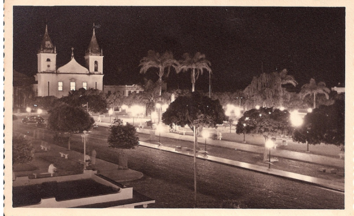

Centro Histórico
Parnaíba - primeiras décadas do século XX
O centro histórico de Parnaíba reúne fachadas, ruas e edificações que testemunham diferentes momentos da formação urbana da cidade. Em suas imagens antigas, é possível perceber a força comercial da região e a importância dos espaços públicos na vida cotidiana.
Os postais dedicados a essa área ajudam a compreender a permanência de certos traços arquitetônicos e a transformação de outros. Eles registram um cenário em que memória, circulação e identidade local se entrelaçam de forma muito particular.
Imagens relacionadas


Antes e Depois
Compare o postal histórico com o registro atual .
